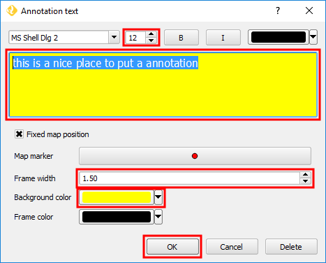

Let's edit our the annotation text and settings. For that, Double-click inside the annotation box.
In the Annotation text dialog, do:
- Type some text in the text field. For example, "This is a nice place to put an annotation"
- To change the font type, size or color, you need to select part of text. In this case, select it all.
- Font size = 12
- Frame width = 1.5
- Background color = yellow
- Click OK to apply the changes and close the dialog
